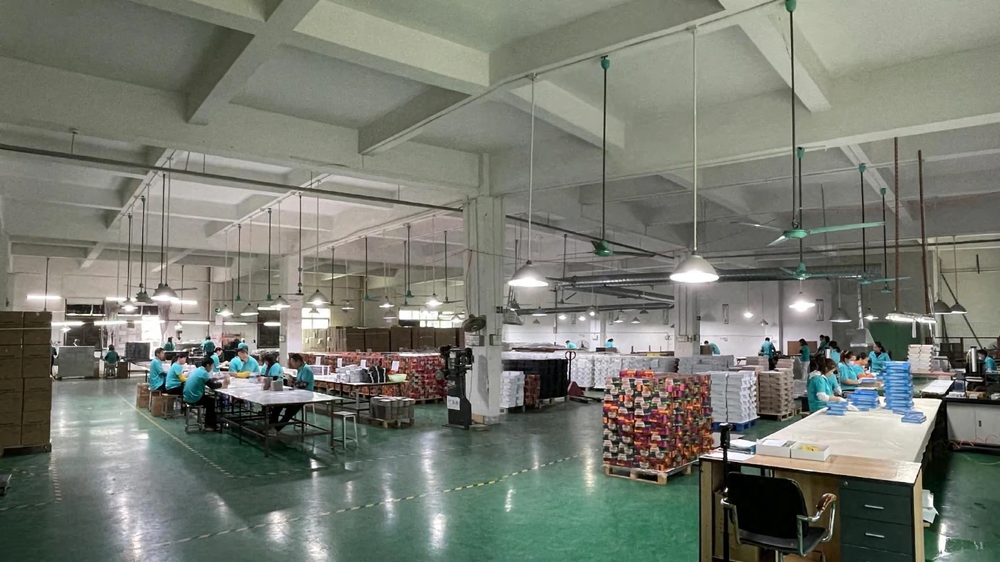
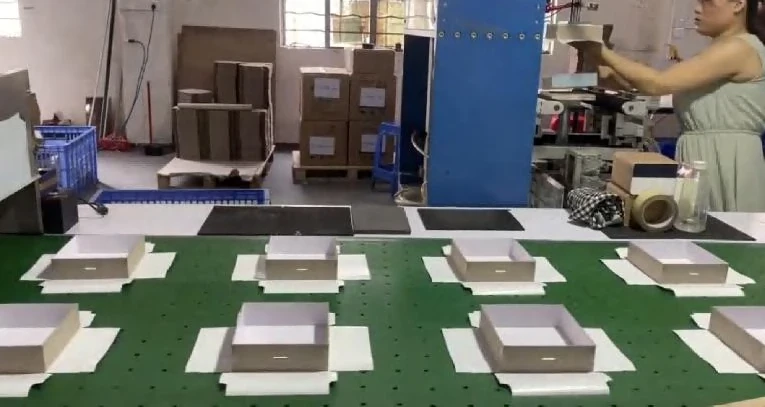
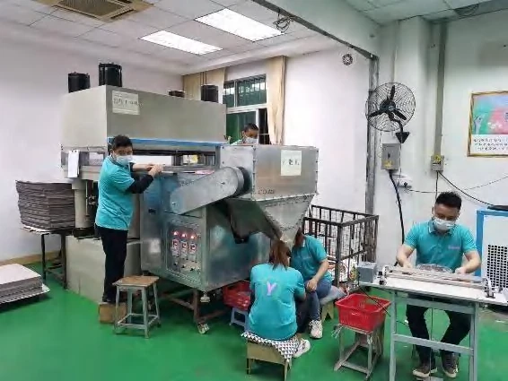

Coordination impression et production
Les spécifications approuvées passent de la prépresse à l'impression et aux étapes de façonnage suivantes.
Production de Dongguan
Qinyi Printing exploite une installation d'environ 5 000 m² avec plus de 80 membres d'équipe. Le flux de travail interne prend en charge les puzzles personnalisés, les jeux en papier et les emballages imprimés, des fichiers approuvés au produit emballé.

Parcours de production interne
Le parcours exact dépend du cahier des charges approuvé, mais la production de base des produits en papier peut être coordonnée au sein de l'exploitation de Dongguan.
Le cas d'usage, le marché de destination, la quantité, le calendrier et les fichiers fournis sont vérifiés avant la planification de la production.
Les dielines, la construction, l'ajustement des composants et les exigences de découpe à l'emporte-pièce sont établis pour le produit.
Le fichier approuvé est préparé pour le matériau, le procédé d'impression et la finition sélectionnés.
La production offset est soutenue par des équipements Roland et Heidelberg documentés dans le profil de l'entreprise.
La coupe du papier, la découpe à l'emporte-pièce et les finitions de surface applicables suivent le cahier des charges approuvé.
Les puzzles, pièces de jeu, inserts et emballages sont réunis dans le conditionnement convenu.
Atelier de production
L'impression, la transformation du papier et l'emballage manuel affectent chacun l'ajustement final, la finition et la présentation d'un produit multi-composants.

Les spécifications approuvées passent de la prépresse à l'impression et aux étapes de façonnage suivantes.

La géométrie de coupe et l'ajustement des composants sont vérifiés par rapport à la construction du produit.

Les composants, les notices et l'emballage de vente sont assemblés dans l'ordre convenu.
Points de contrôle qualité
Le contrôle qualité commence par un cahier des charges complet du produit et se poursuit tout au long de la production et du conditionnement final.

Les dimensions, les matériaux, le nombre de pièces, l'impression, la finition, l'emballage, les tolérances et les besoins du marché de destination sont enregistrés.
Le fichier, les dielines, la structure et les échantillons de référence convenus sont confirmés avant le tirage.
L'impression, la coupe, l'ajustement des composants et la finition sont vérifiés aux étapes de production pertinentes.
Le nombre de pièces, les inserts, la séquence d'emballage et la présentation sont examinés lors de l'assemblage.
Les produits finis et les exigences d'emballage sont évalués par rapport aux critères du projet convenus avant expédition.
Documents commerciaux et de conformité
Qinyi peut fournir les documents d'enregistrement de l'entreprise et les documents de conformité applicables aux acheteurs qualifiés lors de l'examen du projet. La disponibilité et la portée sont confirmées en fonction du produit spécifique, du matériau et du marché de destination.
Société enregistrée : 东莞市勤益印刷有限公司 / Dongguan Qinyi Printing Co., Ltd., située à Chashan Town, Dongguan.
Indiquez-nous la catégorie de produit, le marché de vente et les exigences de l'acheteur afin que les documents actuels pertinents puissent être identifiés.
Les certificats ou rapports historiques n'établissent pas la couverture actuelle. La validité, l'organisme émetteur et l'applicabilité sont vérifiés lorsque des documents sont fournis pour un projet.